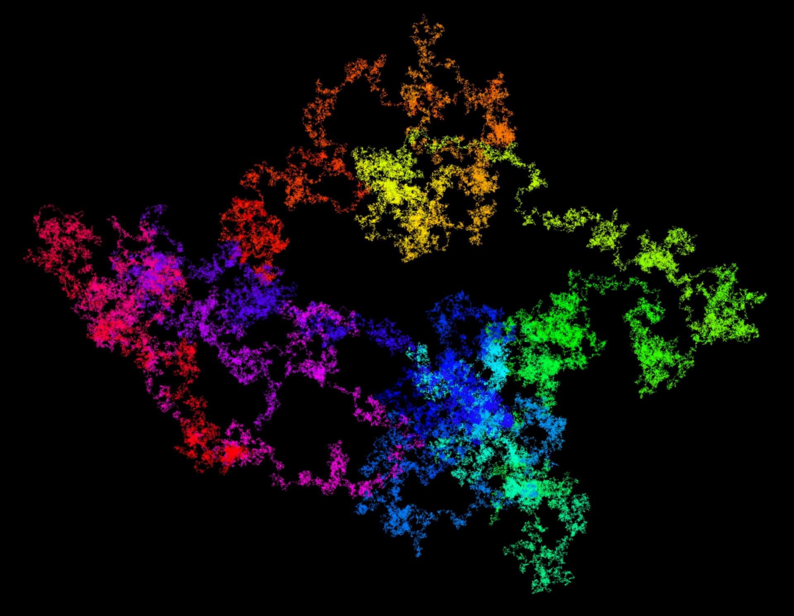

The Afterlife of Pi
This is pi.
Pi represents the ratio of a circle’s circumference to its diameter. Or, a circle’s edge is always about 3.14 times longer than its width.
But none of that matters for this story.
This story concerns itself with pi’s digits. They will take us on a wandering journey, connecting people and mathematical discoveries.
Starting with one man and his obsession with pi.
1853
It was the spring of 1853. You might remember it as the time when Gail Borden  applied to patent his process for condensed milk in the US (his name is on the tin).
applied to patent his process for condensed milk in the US (his name is on the tin).

The kids were cuckoo for condensed milk.

The same man who three years prior, introduced the world to the meat biscuit, an invention that proved to be ahead of its time. I digress—Gail Borden has nothing to do with this story.
But at the exact same time over in England, in the small coal-mining town of Houghton-le-Spring, a schoolmaster sent a book to the printer. Back then photos were rare, but I found this impressive ox from the town.

His name (the schoolmaster) was William Shanks . He was 41. The book was about the most mouth-watering mathematical constant—the sweetened condensed milk of math—pi, calculated and written out to 607 decimal places. Further than anyone had written it before.
. He was 41. The book was about the most mouth-watering mathematical constant—the sweetened condensed milk of math—pi, calculated and written out to 607 decimal places. Further than anyone had written it before.

In the mornings before work Shanks would compute, and in the afternoons he would check his morning’s work. Each day the same thing. He’d write out the meticulous calculations, all by hand.
He spent nearly two and a half years producing a number that resulted in 607 characters, just five times longer than the letters in this sentence.
3.1415926535897932384626433832795028841971693993751058209749445923078164062862089986280348253421170679821480865132823066470938446095505822317253594081284811174502841027019385211055596446229489549303819644288109756659334461284756482337867831652712019091456485669234603486104543266482133936072602491412737245870066063155881748815209209628292540917153643678925903600113305305488204665213841469519415116094330572703657595919530921861173819326117931051185480744623798347495673518857527248912279381830119491298336733624419366430860213950160924480773209436285530966202755693979869502224749962060749703041236692913332 Like me, you might be wondering what that felt like, to spend a day, or more, resulting in a measly single new digit. So I sharpened my pencil. I opened up Machin’s formula, the gold standard to calculate pi accurately during Shanks’ day. It looked simple enough:
π = 16arctan1/5 - 4arctan1/239
I won’t attempt to explain the math, because I can’t. But thanks to YouTube and my decades-old training in long division, here is what it looks like to accurately calculate pi’s first decimal point by hand.
Aside from having to watch some basic videos to re-learn how to carry numbers, it was pretty straightforward. But each digit gets increasingly more computationally taxing to calculate. As the desired decimal place grows, more terms are needed to be calculated, to even greater precision.
Shanks knew his effort did nothing for his reputation as an (amateur) mathematician. Possibly something, though, for his reputation as a Computer. Back then that was a job for humans, a person who computes. He was darn good.
Shanks said it would not:
“be productive of anything in the shape of pecuniary recompense at all adequate to the labour of such lengthy computations.”
A fancy way of saying it wasn’t about the Benjamins. They didn’t exist yet, and this was England after all.
If it wasn’t for the money or the fame, why do it at all? He had no need for that precise a value of pi. No one did. His motivation was simple and relatable; he wanted to make something original and fill his free time. That something:
“should not subject him either to great tension of thought, or to consult books.”
For this, we have TikTok. For Shanks, he had the manual computation of the digits of pi.
After publication, he set aside his daily ritual in favor of more thrilling computations like Euler’s constant and prime tables. For reasons unknown, he picked it back up to hammer out 100 more digits, bringing his full total to 707 in his 1873 publication.

How many pencils (or pens) did Shanks wear through? What was the physical toll? My obsession with how he calculated pi started to mirror his obsession with producing it. Lucky for me, number enthusiast Erwin Engert calculated pi to 100 decimal places, and documented the process. He estimated that Shanks’ calculations to arrive at 707 decimal places would fill over 5,000 pages. More pages than the entire stack of the Harry Potter series.

1860s
Practically speaking, the 707 decimal places are superfluous. The most sophisticated engineering challenges of modern day don’t need more than 15. But the digits of pi started taking on a life of their own outside of their geometric confines.
The first mathematician to closely interrogate pi’s digits was Augustus De Morgan.  In a posthumous publication, he made a passing observation about the lack of 7s represented in Shanks’ original 607 computation.
In a posthumous publication, he made a passing observation about the lack of 7s represented in Shanks’ original 607 computation.
| Digit | Count |
|---|---|
| 0 | 58 |
| 1 | 64 |
| 2 | 67 |
| 3 | 67 |
| 4 | 64 |
| 5 | 56 |
| 6 | 62 |
| 7(highlighted in the chart) | 44 |
| 8 | 59 |
| 9 | 66 |
He wasn’t so much as troubled by it as he was curious. After all, random sequences have uneven counts too. But it raised a question: Was a low count of 7s a property of pi, or just ordinary fluctuation in a random pattern?
1888
Counting the digits was one way to look for a pattern. Someone else thought to draw them. You know him well. The man, the myth, the legend, John Venn.  Yes, that Venn. I can hear your fawning from the future.
Yes, that Venn. I can hear your fawning from the future.
After his 1880 smash hit the Venn Diagram, John was (possibly) searching to recreate his earlier success. He was trying to determine whether a sequence can be called random when you know exactly how it was made.
Pi was the perfect specimen. It gave Venn what his argument needed:
- a sequence everyone knew was produced by a rule,
- long enough to inspect (high five Shanks),
- and whose digits looked like chance.
To illustrate this last point, Venn drew a path that used pi’s digits to choose the direction of the pen strokes. He walked through each digit (0-7) and assigned its number to an eight point compass. 8s and 9s had to sit this one out.

Venn’s verdict:
“The result seems to me to furnish a very fair graphical indication of randomness.”
I recreated Venn’s path with code so you could see it animated. However, mine turned out differently than his. I checked and re-checked my numbers, and even drew it out by hand to confirm, but Venn’s dramatically departed mine at the 24th decimal place.
I scoured the internet to see if anyone could confirm my suspicions. I only found one measly mention—a lone comment in a brief blog post about Venn’s pi path.

Mark hit the mark. Here is Venn’s path, with the actual digits from Shanks’ 707 decimal places of pi.
Text description
Key: the red segment is the latest step and the gray line is the path so far. Each digit of pi sets a direction (8 directions: digits 0 to 7). Faded digits in the strip above the drawing are skipped and don't move the line.
Press play or move the step slider to start the walk.
While the result is quite a bit different, they both looked random to me. This wandering pen thing had legs.
1905
Speaking of legs, a drunken man has two (this will make sense soon). We will briefly wander away from pi and continue Venn’s thread. In 1905, Karl Pearson  threw down a challenge he dubbed “the problem of the random walk.”
threw down a challenge he dubbed “the problem of the random walk.”

He asked fellow readers in the journal Nature, if a man walks one yard at a time, turning in random directions, and repeats this n times, how far from his starting point is he likely to end up?
Sound familiar?
Lord Rayleigh  responded with a “well actually”— he solved this problem 25 years prior with sound waves. It was the square root of n, or after 100 steps, only about 10 yards away.
responded with a “well actually”— he solved this problem 25 years prior with sound waves. It was the square root of n, or after 100 steps, only about 10 yards away.
Pearson replied with an excuse that he was into other stuff and was unaware of Rayleigh’s prior work. Perhaps there were other excuses too, since he famously summed-up this correspondence with:
“The lesson of Lord Rayleigh’s solution is that in open country the most probable place to find a drunken man who is at all capable of keeping on his feet is somewhere near his starting point!”
Pearson gave a name to Venn’s wandering pen. “Random walk” stuck, and is still the term used in mathematics today.
1921
Years passed. Nothing much happened of note. But then in 1921—in Europe again—a mathematician was having his own problems with walking.
Hungarian mathematician George Pólya enjoyed his leisurely walks in the woods, finding them a fine place to think about his work. One day he ran into one of his students out on a stroll with his fiancée. Nothing unusual. But then they crossed paths again. And again. Things were getting awkward and Pólya was embarrassed.
enjoyed his leisurely walks in the woods, finding them a fine place to think about his work. One day he ran into one of his students out on a stroll with his fiancée. Nothing unusual. But then they crossed paths again. And again. Things were getting awkward and Pólya was embarrassed.
It was an accident. But how likely was it?
Instead of confronting the problem head on, Pólya retreated to an abstract and hypothetical world, as one does. He reduced the problem to a two dimensional lattice to find an answer to his definitely-not-snooping incident.
He posed a similar question to that of Pearson, though used the more elegant term “promenaders” in place of “walkers.” Simply put, given an infinite walk and infinite grid, will the probability of two promenaders meeting be a certainty?
Text description
Two walkers start in opposite corners of a grid. Each step, both walkers move one square up, down, left or right at random. The red line and couple figure are one walker, and the blue line and single figure are the other. The walk ends when both are on the same square at the same time, or after 1,000 steps each.
He found that this concept of two walkers meeting can actually be decomposed and reframed to ask the question, will a walker return to his origin? Yes. A simple random walk on a two-dimensional grid returns to its starting point with probability one. Given unlimited time, it returns infinitely often.
Text description
Key: the red segment is the latest step and the gray line is the path so far.The red dot is the starting point. Each digit of pi sets a direction (4 directions: digits 0 to 3). Faded digits in the strip above the drawing are skipped and don't move the line.
Press play or move the step slider to start the walk.
He published a proof in the German journal Mathematische Annalen, which I don’t understand but it looks thorough and compelling.

He also found that in a three dimensional space, the probability of a return drops to 34%. This gave way to the saying by Shizuo Kakutani :
:
“A drunk man will find his way home, but a drunk bird may get lost forever.”
You may now be wondering if our pi thread got lost. Same. So let’s bring back our main character. If pi’s digits are random, does a pi promenader in Pólya’s world return to its starting point? Drumroll please…
Text description
Key: the red segment is the latest step and the gray line is the path so far.The red dot is the starting point. Each digit of pi sets a direction (4 directions: digits 0 to 3). Faded digits in the strip above the drawing are skipped and don't move the line.
Press play or move the step slider to start the walk.
Sadly, no, it does not. But 707 digits are certainly not a lot compared to infinity. Maybe we just need more.
Spoiler alert: we still don’t know.
Another brief tangent, this time back to 1909 and Émile Borel. He defined the concept of normality in numbers. Basically, a number is normal if “its infinite sequence of digits is distributed uniformly in the sense that each of the b digit values has the same natural density 1/b.”
Shades of De Morgan, right? I bring this up because nobody has proved that pi has it. But even that would not, by itself, settle whether our walker keeps coming home.
1937
Back to pi, for real (math pun). Shanks’ calculation had become authoritative through reuse and time. No one else dared put in his Herculean effort to go further.
In 1937, the Palais de la Découverte, a science museum, opened in Paris. In it was a room entirely dedicated to pi. Shanks’ laborious digits were celebrated as a giant ceiling installation around the room.


Pi’s digits had gone from an idle-time filler, to a published reference, to a museum display. His work would be immortalized forever.
Until 1946.
British mathematician D.F. Ferguson took out his mechanical desk calculator. He used a Machin-esque formula and ripped through 620 digits of pi.
Ferguson compared his result to Shanks’ digits. Everything was peachy until the 528th digit. Somewhere along the way, Shanks’ unflappable exactness faltered. Ferguson discovered that everything Shanks had computed after that point, from the 528th to 707th digit, was entirely wrong.
3.14159265358979323846264338327950288419716939937510582097494459230781640628620899862803482534211706798214808651328230664709384460955058223172535940812848111745028410270193852110555964462294895493038196442881097566593344612847564823378678316527120190914564856692346034861045432664821339360726024914127372458700660631558817488152092096282925409171536436789259036001133053054882046652138414695194151160943305727036575959195309218611738193261179310511854807446237996274956735188575272489122793818301194912983367336244065664308602139501609244807723094362855309662027556939798695022247499620607497030412366886199511008920238377021314169411902988582544681639799904659700081700296312377381342084130791451183980570985 Oh, poor Shanks.
When I first read that I felt for the guy. But who doesn’t make mistakes? The other day, I put the milk back in the cupboard instead of the fridge. Like Shanks, the last quarter was spoiled. But Shanks never knew. Maybe that was better.
As I dug into Shanks’ error, two sad facts emerged.
The first was when the error appeared. In his book’s preface from 1853, dated Feb 28, Shanks wrote:
“In the following pages, the ratio of the circumference of a circle to its diameter, is determined to the great extent of 527 places of decimals.”
He had initially stopped calculating and was planning to publish 527 decimal places. An April 30 addendum stated how he extended the values to 607 decimals. The slip-up came quite literally in the first digit in that two-month sprint to add 80 more.
The second fact was his misplaced spidey-sense. Dr. Rutherford, the previous record holder, separately calculated and confirmed pi up to 441 decimal places. Shanks wrote:
“so the accuracy is ensured at least to that extent; and it is confidently hoped no error has crept into the remaining 86 places.”
There were indeed no errors in the next 86 places, but not the 87th.
The Error
Many mathematical historians have been drawn to this notorious miscalculation. How did a man who spent years calculating by hand suddenly slip up? A brief micro-mathematical forensic investigation was in order.
The short version: probably due to a momentary lapse in focus, Shanks forgot to copy a digit here and there, setting up a cascading effect of incorrect numbers. Skip ahead.
The long version: In 2014, a science writer at American Scientist named Brian Hayes did exactly that.
Instead of searching for the correct answer, Hayes searched back for the wrong one, reverse-engineering what happened.
Remember Machin’s formula? No, probably not. A refresher:
π = 16arctan1/5 - 4arctan1/239
It contains two arctan series. Think of each as a long list of fractions that get smaller and smaller, and you add them all up. Every fraction in the list is a “term.”
The two sides are lopsided, though. The 1/239 terms shrink and die out fast. The 1/5 terms shrink slowly. To reach his desired accuracy, Shanks had to calculate 506 individual fractions for just that side of the equation, each written out to 709 decimal places.
Pedantic note: Shanks needed to calculate two extra “guard digits” at the end to prevent rounding errors. So for 707 decimal places that would be 709. You’ll notice that shift below.
Shanks had also published his intermediate scratch work, including the final sums for both arctan series. Hayes measured exactly how far Shanks’ final value shifted the truth. Then he walked back through all 506 terms to spot the culprit.
Suspect one: term 248
To calculate this specific term, (1/5)^497/497, Shanks was doing standard long division by hand. At the 531st decimal place he skipped a zero.
Correct: ...74446680080482897384305... Shanks: ...74446680084828973843058...Every digit after it slid one column to the left. (This was actually first spotted and credited to our other Shanks superfan, Erwin Engert.)
For those of you still paying attention, you noticed that the typo happened at the 531st decimal place, but Shanks’ final value broke at the 528th. Because Machin’s formula multiplied the arctan series by 16, it magnified the error, corrupting the final value of pi a few places earlier.
Suspect two: term 72
Ferguson—the man who calculated pi using the desk calculator—actually flagged an anomaly in term 72 back in 1946. Hayes found that if you dropped five digits at that point and slid everything over, you could reproduce Shanks’ value.
Correct: ...44827586206896551724137... Shanks: ...44827586205172413793103...With both of these errors accounted for, Hayes reproduced Shanks’ up to 601 digits on the 1/5 side of the equation.
Suspects three and four: still at large
At digit 601, the 1/5 side fractured again, and the trail went cold for detective Hayes.
A similarly unexplained fracturing occurred on the 1/239 side starting at the 592nd decimal place.
Because both sides are ultimately combined into one final number, pi was corrupted from the first error all the way to the end.
Perhaps the sadder and more relatable part of this cold case is that Shanks knew he had made clerical errors.
In the preface to his 1873 publication, Shanks issued an apology for a few mismatched digits, explaining he had lost track of his own scratch work revisions. Confident he had found the only typo, he wrote:
“At all events, from some strange cause or accident (perhaps from being overworked) the addition of 128 was very soon afterwards made…Hence arose the double error, which remained, strange to say, undetected for upwards of twenty years! This mistake, however, from its nature, in no wise affects the accuracy of the other figures.”
So there were a handful of errors, all seemingly in those months before publication in April 1853. None of them were computing mistakes, but rather clerical errors. It is more surprising to me that given the sheer amount of numbers he had to calculate, track, and copy by hand, there weren’t more—a testament to both his endurance and focus.
Rewind
Before we speed into the future, let’s do some revisionist history.
Starting with the OG skeptic, De Morgan. He counted 44 sevens in the original 607 decimal places. The true version has 50 sevens. A part of the shortfall De Morgan noticed was not a property of pi at all, it was the error.
| Digit | Count |
|---|---|
| 0 | 57 |
| 1 | 68 |
| 2 | 64 |
| 3 | 63 |
| 4 | 64 |
| 5 | 56 |
| 6 | 63 |
| 7(highlighted in the chart) | 50 |
| 8 | 60 |
| 9 | 62 |
Remember Pearson (who coined the term “random walk”)? He and De Morgan coincidentally both taught at University College London—different generations. They both were looking to answer the same question: how do you test probability without a machine?
While De Morgan simply counted the distribution, Pearson made the now-famous chi-square test to statistically critique distributions.
Pearson never used his test on Shanks’ digits, so I did on both versions. Shanks’ 607 digits have a p value = 0.61. The correct digits have a p value = 0.92. A p-value is the probability of seeing counts this lopsided if the digits were truly random. Near 1 means they look exactly like chance.
While the original digits have a lower score, neither raise a statistical flag. The 7s are short in both, but the test weighs all ten digits at once, and the other nine are fine.
Next up, John Venn. Let’s fix his walk with the true value of pi through the same number of digits as his original. A walk made from Shanks’ digits and one made from the corrected digits would initially follow the same instructions and then diverge.
Text description
Key: the red segment is the latest step and the gray line is the path so far. Each digit of pi sets a direction (8 directions: digits 0 to 7). Faded digits in the strip above the drawing are skipped and don't move the line.
Press play or move the step slider to start the walk.
While there is a clear difference between them, nothing jumps out to me as noteworthy. Both the old and new look random-ish.
Finally, just for fun, we return to George Pólya. We’ll do an updated version of his walk on the correct 707 digits.
Text description
Key: the red segment is the latest step and the gray line is the path so far.The red dot is the starting point. Each digit of pi sets a direction (4 directions: digits 0 to 3). Faded digits in the strip above the drawing are skipped and don't move the line.
Press play or move the step slider to start the walk.
Unsurprisingly, the walker still doesn’t return to origin because of the small sample size.
1949
Let’s keep moving forward. In 1949, the museum’s ceiling was corrected with the true value of pi.

A few years earlier, lowercase computers entered the scene. Non-human, electronic, digital, and programmable.
The job title Computer used to belong to people, like Shanks. During World War II, the University of Pennsylvania employed nearly a hundred of them (mostly women) to calculate ballistic trajectories by hand. But then the Army built a machine to do it faster.
Dude, you’re getting a Dell Electronic Numerical Integrator and Computer! (ENIAC for short).

Six of those Computers (Kay McNulty, Betty Jennings, Betty Snyder, Marlyn Wescoff, Fran Bilas and Ruth Lichterman) had to figure out how to program ENIAC with just diagrams since they didn’t yet have clearance to see it.
By hand it would take around 40 hours to calculate a shell’s trajectory. By machine, according to Jennings:
“ENIAC calculated the trajectory faster than it took the bullet to travel.”
The six women weren’t invited to the celebration dinner, and none were named in the press coverage.
Back to pi. The same year the museum fixed the digits, Professor John von Neumann,  like his mathematical forefathers, was interested to see if ENIAC could crank out more decimal places of pi, for the purpose of:
like his mathematical forefathers, was interested to see if ENIAC could crank out more decimal places of pi, for the purpose of:
“obtaining a statistical measure of the randomness of the distribution of the digits.”
ENIAC computed 2,037 decimal places of pi. There was mayhem in the streets. A surge of babies were named Pi. Okay, neither of those things happened, but the record was shattered and von Neumann got his sweet, sweet digits.
Now there was a healthy serving of sevens. The updated distribution of pi’s digits looked like this:
| Digit | Count |
|---|---|
| 0 | 184 |
| 1 | 213 |
| 2 | 212 |
| 3 | 190 |
| 4 | 198 |
| 5 | 211 |
| 6 | 204 |
| 7(highlighted in the chart) | 200 |
| 8 | 207 |
| 9 | 218 |
The pi arms races had begun. As computers got more and more powerful, calculating pi came along for the ride as a sort of benchmark.
In 1961, Shanks was back. Daniel Shanks  that is. No known relationship to William, but you have to wonder if it wasn’t some sort of namesake destiny. Daniel Shanks and John Wrench calculated pi to a whopping 100,000 decimal places, all in less than nine hours.
that is. No known relationship to William, but you have to wonder if it wasn’t some sort of namesake destiny. Daniel Shanks and John Wrench calculated pi to a whopping 100,000 decimal places, all in less than nine hours.
They tested the digit frequencies almost immediately. That continued to be part of why anyone wanted more digits. The digit’s distribution remained perfectly balanced.
| Digit | Count |
|---|---|
| 0 | 9999 |
| 1 | 10137 |
| 2 | 9908 |
| 3 | 10025 |
| 4 | 9971 |
| 5 | 10026 |
| 6 | 10029 |
| 7(highlighted in the chart) | 10025 |
| 8 | 9978 |
| 9 | 9902 |
Today, the most digits calculated of pi is 314,000,000,000,000, set in 2025, though the attempt took a Shanks-esque 110 days. Imagine for a moment you are holding Harry Potter and the Deathly Hallows (759 pages). “Deletrius Aparecium!” you shout with enthusiasm and a wanting British accent. Every single letter in that book vanishes, then turns into a digit of pi. Now imagine that every single person in the US—babies included—is holding their own copy, with their own unique digits. That is 314 trillion, give or take a few.
Use the slider below the chart to step through who set each record.
Text description and data table
Each dot is a new world record for how many digits of pi had been calculated. The line goes up and to the right: from 100 digits in 1706 to 314,000,000,000,000 digits in 2025. The vertical scale is logarithmic, so each gridline is ten times the one below it. Progress is slow before 1940 and then climbs steeply once computers take over.
| Year | Who | Digits |
|---|---|---|
| 1706 | John Machin | 100 |
| 1719 | Thomas Fantet de Lagny | 112 |
| 1721 | Anonymous | 152 |
| 1844 | Zacharias Dase and Strassnitzky | 200 |
| 1847 | Thomas Clausen | 248 |
| 1853 | Lehmann | 261 |
| 1853 | Rutherford | 440 |
| 1853 | William Shanks | 527 |
| 1946 | D. F. Ferguson | 620 |
| 1947 | D. F. Ferguson | 710 |
| 1947 | D. F. Ferguson | 808 |
| 1949 | Levi B. Smith and John Wrench | 1,120 |
| 1949 | G. W. Reitwiesner et al. | 2,037 |
| 1954 | S. C. Nicholson & J. Jeenel | 3,093 |
| 1957 | George E. Felton | 7,480 |
| 1958 | Francois Genuys | 10,000 |
| 1958 | George E. Felton | 10,021 |
| 1959 | Francois Genuys | 16,167 |
| 1961 | Daniel Shanks and John Wrench | 100,265 |
| 1966 | Jean Guilloud and J. Filliatre | 250,000 |
| 1967 | Jean Guilloud and M. Dichampt | 500,000 |
| 1973 | Jean Guilloud and Martine Bouyer | 1,001,250 |
| 1981 | Kazunori Miyoshi and Yasumasa Kanada | 2,000,036 |
| 1981 | Jean Guilloud | 2,000,050 |
| 1982 | Yoshiaki Tamura | 2,097,144 |
| 1982 | Yoshiaki Tamura and Yasumasa Kanada | 4,194,288 |
| 1982 | Yoshiaki Tamura and Yasumasa Kanada | 8,388,576 |
| 1983 | Yasumasa Kanada, Sayaka Yoshino and Yoshiaki Tamura | 16,777,206 |
| 1985 | Bill Gosper | 17,526,200 |
| 1986 | David H. Bailey | 29,360,111 |
| 1986 | Yasumasa Kanada, Yoshiaki Tamura | 33,554,414 |
| 1986 | Yasumasa Kanada, Yoshiaki Tamura | 67,108,839 |
| 1987 | Yasumasa Kanada, Yoshiaki Tamura, Yoshinobu Kubo and others | 134,214,700 |
| 1988 | Yasumasa Kanada and Yoshiaki Tamura | 201,326,551 |
| 1989 | Gregory V. Chudnovsky & David V. Chudnovsky | 480,000,000 |
| 1989 | Gregory V. Chudnovsky & David V. Chudnovsky | 535,339,270 |
| 1989 | Yasumasa Kanada and Yoshiaki Tamura | 536,870,898 |
| 1989 | Gregory V. Chudnovsky & David V. Chudnovsky | 1,011,196,691 |
| 1989 | Yasumasa Kanada and Yoshiaki Tamura | 1,073,740,799 |
| 1991 | Gregory V. Chudnovsky & David V. Chudnovsky | 2,260,000,000 |
| 1994 | Gregory V. Chudnovsky & David V. Chudnovsky | 4,044,000,000 |
| 1995 | Yasumasa Kanada and Daisuke Takahashi | 4,294,960,000 |
| 1995 | Yasumasa Kanada and Daisuke Takahashi | 6,442,450,000 |
| 1997 | Yasumasa Kanada and Daisuke Takahashi | 51,539,600,000 |
| 1999 | Yasumasa Kanada and Daisuke Takahashi | 68,719,470,000 |
| 1999 | Yasumasa Kanada and Daisuke Takahashi | 206,158,430,000 |
| 2002 | Yasumasa Kanada & 9 man team | 1,241,100,000,000 |
| 2009 | Daisuke Takahashi et al. | 2,576,980,377,524 |
| 2009 | Fabrice Bellard | 2,699,999,990,000 |
| 2010 | Shigeru Kondo | 5,000,000,000,000 |
| 2011 | Shigeru Kondo | 10,000,000,000,050 |
| 2013 | Shigeru Kondo | 12,100,000,000,050 |
| 2014 | Sandon Nash Van Ness "houkouonchi" | 13,300,000,000,000 |
| 2016 | Peter Trueb | 22,459,157,718,361 |
| 2019 | Emma Haruka Iwao | 31,415,926,535,897 |
| 2020 | Timothy Mullican | 50,000,000,000,000 |
| 2021 | Team DAViS of the University of Applied Sciences of the Grisons | 62,831,853,071,796 |
| 2022 | Emma Haruka Iwao | 100,000,000,000,000 |
| 2024 | Jordan Ranous, Kevin O'Brien and Brian Beeler | 105,000,000,000,000 |
| 2024 | Jordan Ranous, Kevin O'Brien and Brian Beeler | 202,112,290,000,000 |
| 2025 | Linus Media Group, Kioxia | 300,000,000,000,000 |
| 2025 | Kevin O'Brien, Divyansh Jain, Brian Beeler | 314,000,000,000,000 |
The amount of compute has exploded so much that I had to chart this with a y-axis on a log scale just to see a curve. Even after my meticulously calculated (and magically accurate) Harry Potter comparison, the magnitude is hard to comprehend.
So here is another comparison: If I were to render the chart with a linear scale—that is a 1:1 scale of digits to pixels—it would take you about 9,950 years of non-stop scrolling on your phone to get from Shanks’ 1853 digits to 2025. You could probably cut it to ~500 years if you used a desktop mouse wheel though.
Full Circle
By 2012, researchers were exploring walks built from 100 billion digits of pi. So to end things, we return to pi’s digits via Pólya’s walker, now with an enormous—yet still finite—journey to examine.

But they didn’t keep track of the number of times it returned to its origin, so I measured it myself to one million digits. Drumroll please…
Text description
Key: the red segment is the latest step and the gray line is the path so far.The red dot is the starting point. Each digit of pi sets a direction (4 directions: digits 0 to 3). Faded digits in the strip above the drawing are skipped and don't move the line.
Press play or move the step slider to start the walk.
At the 21,344th decimal place, our walker comes home, and again several digits later. Then it wanders off and doesn’t return for the rest of the first million.
I can only imagine Shanks, De Morgan, Venn, Pearson, and Pólya huddled around an iPad watching pi digits being calculated in realtime guiding a random walk. Their eyes staring unblinking at the screen, like a toddler watching
Shanks died in 1882, unaware of Venn’s path, the museum’s celebration, and the error and its correction.
But as our forensic investigator Hayes aptly put it:
“Stories about Shanks tend to focus on the mistakes. We look back with pity and horror on all those pages of meticulous arithmetic rendered worthless by a slip of the pencil. But I would argue that even with the errors, Shanks’s computation of pi was an impressive endeavor. His 527 correct digits were not bettered for almost a century. Augustus De Morgan, one of the leading mathematicians of the era, had his doubts about Shanks’s work, but he also spoke admiringly of ‘the power to calculate, and...the courage to face the labour.’”
Shanks directly and indirectly created paths for others to explore and build upon in spite of his errors, simply because he wanted something to do.
Thanks to Shanks. To power and courage.